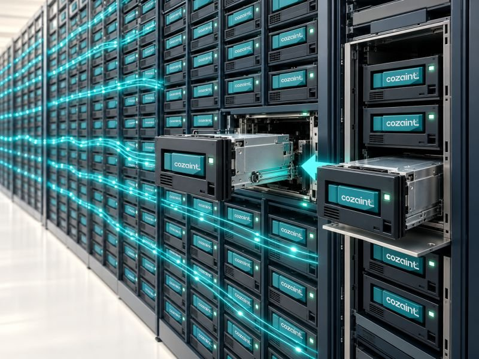

Proven by Hollywood
Hollywood trusts LTO with its archives. Your surveillance video should too.
The tape technology studios use to protect their most valuable video can keep months or years of your security video, for far less than disk or cloud storage.

What the studios figured out
The world's most valuable video lives on tape.
Studios and broadcasters create some of the most valuable video in the world, and they have relied on LTO tape to preserve film masters and broadcast archives for years. The reasons are simple: very low cost per terabyte, decades of shelf life, and a stored cartridge that draws no power.
Video surveillance is Media & Entertainment's sister industry. It also records enormous amounts of video that must be kept. Yet most organizations are still buying racks of hard drives to hold footage nobody watches every day, and cutting how long they keep it when the budget runs out.
Studio & broadcast vaults
- LTO tape on the shelf
- Decades of shelf life
- Zero power at rest
- 30 TB per LTO-10 cartridge, up to 40 TB with the newest cartridges
Surveillance server rooms today
- Racks of spinning disks
- Power and cooling 24/7
- Drives replaced every few years
- Retention cut to fit the budget
The missing piece
Why tape never caught on in surveillance, until now
Operators don't want to leave their video management software (VMS), hunt for tapes and wait on a restore job. Cozaint MARCIA™ removes that barrier. Its patented architecture lets an operator's normal VMS playback request recall archived video from LTO and play it on the same timeline they use every day.
What it means for you
Keep more video, for longer, for less.
Keep the full retention period
Hold every camera at full resolution and frame rate for as long as your policy, regulator or insurer requires, instead of cutting to fit the disk.
Lower lifecycle cost
A small disk tier for recent video plus LTO for the rest costs far less over five years than disk-only or cloud storage.
Less power, cooling and space
Cartridges at rest draw no power and need no cooling, and one cartridge holds what used to take a shelf of drives.
Evidence when you need it
Claims, investigations and disputes often surface months later. With MARCIA, that video is still there and plays back on the same timeline.
Built for organizations where retention is long or mandated: banks, casinos, airports, hospitals, prisons, campuses, municipalities and critical infrastructure.
Bring Hollywood-grade archiving to your surveillance video.
See what keeping more video would cost you with MARCIA, compared with disk and cloud.